China Employee Termination: Watchfloor Brief for Foreign Employers (Hourly Testing Run)
Key takeaways
- Foreign employers should monitor China termination cases like a live watchfloor, not a one-time legal memo.
- Route legality is necessary, but real outcomes are driven by live control signals: evidence quality, communication discipline, settlement coherence, and closure integrity.
- Pulse-style watchfloor updates give non-China leadership immediate visibility on where a case can still fail.
- Most avoidable escalation events come from late detection of drift, not from absence of legal route options.
- Keep legal depth in appendix and lead with practical monitoring actions.
Pulse lead
This run uses a watchfloor format: each active termination case is treated as a live operational stream with explicit alert conditions. For foreign clients, this structure is practical because it mirrors how real cross-border teams work—multiple owners, asynchronous approvals, and rapid decision windows. The key question is not only “is the route legal?” but “are all live signals still within safe bounds right now?”
Plain-language legal and regulatory context first
China’s Labor Contract Law sets route boundaries and severance obligations. The State Council implementation regulations and SPC interpretation guide how dispute forums assess procedural fairness, documentary consistency, and evidence reliability. In business terms for foreign employers, the rule is direct: route rationale, execution behavior, and payout handling must remain coherent from pre-action review to final closure.
A case can begin in a legally defensible state and still fail later if live execution signals deteriorate and no one acts.
Watchfloor signal board (live-monitor view)
Signal A: Route integrity
What to monitor: Whether route preconditions remain true as facts evolve.
Alert condition: New facts invalidate original route assumptions.
Immediate response: Freeze progression, rerun legal fit, and document route delta.
Signal B: Evidence continuity
What to monitor: Chronology coherence, record completeness, and unresolved contradictions.
Alert condition: Critical document gap or timeline conflict appears after route lock.
Immediate response: Pause employee-facing actions and assign remediation owner with SLA.
Signal C: Communication coherence
What to monitor: Script adherence by managers and HR, including meeting summaries.
Alert condition: Script drift, conflicting statements, or unapproved language use.
Immediate response: Issue corrected written record and trigger legal review of impact.
Signal D: Settlement clarity
What to monitor: Consistency between settlement language, payroll mapping, and explanation notes.
Alert condition: Ambiguous payout component, unexplained timing change, or interpretation conflict.
Immediate response: Relock worksheet with legal/payroll co-sign before any commitment.
Signal E: Tax treatment confidence
What to monitor: Stability of tax assumptions for settlement-related payments.
Alert condition: Last-minute uncertainty over treatment logic or documentation basis.
Immediate response: Validate assumptions with advisors and update employee explanation pack.
Signal F: Escalation readiness
What to monitor: Availability of primary and backup decision authority.
Alert condition: No empowered approver available at critical cutover point.
Immediate response: Activate backup chain and suspend next step until ownership is explicit.
Signal G: Closure completeness
What to monitor: Signature status, payment proof, reconciliation, and archive integrity.
Alert condition: Case marked closed before proof package is complete.
Immediate response: Reopen closure status and complete evidence gate.
Practical implications for foreign employers
- HQ leaders: Ask for current signal status, not static route summaries.
- Regional HR: Treat alert conditions as hard operational gates.
- Payroll/finance: Monitor Signals D/E as co-owners, not downstream processors.
- Managers: Understand that communication drift is a measurable compliance event.
Scenario snapshots
Scenario 1: Signal B turns red after route approval
A route passed initial legal review, then chronology mismatch emerged during evidence refresh. Team halted communication steps, repaired record integrity, and resumed only after revalidation. Outcome: slower timeline, stronger defensibility.
Scenario 2: Signal D detects hidden payout ambiguity
Settlement text looked complete, but payroll mapping showed conflicting component logic. Team paused, rebuilt worksheet, and issued one unified explanation note. Outcome: reduced reopen risk.
Scenario 3: Signal F failure near cutover
Primary approver unavailable during final decision window. Backup chain was not previously confirmed. Team suspended action until authority was formally restored. Outcome: avoided uncontrolled execution.
Daily operations SOP (watchfloor-driven)
- Open case with initial signal baseline (A-G).
- Assign signal owners and alert thresholds.
- Run legal/payroll parallel checks for signals with amber/red risk.
- Confirm communication controls before any meeting.
- Execute with live signal updates and exception logs.
- Trigger escalation protocol for any red signal.
- Close only after Signal G requirements fully pass.
Required document checklist
- Route memo and precondition table
- Evidence chronology index + gap tracker
- Communication script package + briefing confirmation
- Settlement worksheet + tax note
- Escalation authority matrix
- Watchfloor signal log (A-G)
- Meeting records and correction logs
- Payment proof + reconciliation records
- Closure audit and archive report
Exception handling playbook
- Route integrity breach (A): rerun route assessment before any next step.
- Evidence continuity breach (B): auto-hold and remediation SLA enforcement.
- Communication breach (C): corrected record + legal impact check.
- Settlement/tax breach (D/E): relock and reapprove before external communication.
- Authority breach (F): no-go until backup authority confirmed.
- Closure breach (G): reopen and complete proof package.
System implementation notes
Recommended workflow fields:
- signal ID (A-G) + status
- owner + SLA + escalation timestamp
- route delta log
- script version + acknowledgement
- settlement lock version + payroll verifier
- closure completeness score
Control mechanics:
- hard stop on any unresolved red signal
- mandatory re-approval after route/script/settlement changes
- immutable event log for signal transitions
- weekly dashboard for repeat signal failures and aging
Common mistakes and prevention
- Mistake: One-time approval mindset.
Prevention: live watchfloor monitoring through closure.
- Mistake: Late detection of script drift.
Prevention: signalized communication checks and correction protocol.
- Mistake: Payroll engaged after commitments.
Prevention: co-ownership of settlement/tax signals pre-commitment.
- Mistake: Closure declared on signature.
Prevention: enforce multi-condition closure gate.
What to do now
- Deploy watchfloor signal board (A-G) for active cases.
- Define red-signal automatic hold triggers.
- Assign primary/backup owners for every signal.
- Require legal/payroll co-sign for settlement release.
- Publish weekly signal-aging and repeat-failure report.
- Recalibrate signal thresholds quarterly with counsel.
What to watch next
- Persistent scrutiny on process fairness and documentary coherence.
- Ongoing sensitivity around payout clarity and explanation quality.
- Local practice variation that may require signal-threshold tuning.
FAQ
Is a watchfloor model legally required?
No. It is an operational governance method to improve execution consistency.
Can small teams use this?
Yes. Start with five signals (A-E) and add F/G as process maturity improves.
Why use live signals instead of static memos?
Signals make risk visible in real time and force actionable ownership.
Is negotiated termination always low risk?
Not automatically; weak evidence or settlement signals can still create disputes.
When should external PRC counsel be mandatory?
High-risk unilateral routes, protected-status concerns, restructuring contexts, and multi-city complexity.
Legal depth appendix
This brief is anchored in the PRC Labor Contract Law, State Council implementation regulations, and SPC labor-dispute interpretation. Together they support a combined standard: legality, fairness, and documentary reliability are examined together, and inconsistencies across process stages can weaken defensibility.
Disclaimer
This article is informational only and does not constitute legal, tax, or employment advice. Seek qualified PRC legal and tax advice for case-specific decisions.
Sources
- National People’s Congress — Labor Contract Law of the PRC (English), 2007-12-13: http://www.npc.gov.cn/zgrdw/englishnpc/Law/2007-12/13/content_1384064.htm
- State Council — Implementation Regulations of the Labor Contract Law (Decree No. 535), 2008-09-18: https://www.gov.cn/gongbao/content/2008/content_1124615.htm
- Supreme People’s Court — Interpretation on Labor Dispute Application Issues (Fa Shi [2020] No. 26), 2020-12-29: https://www.court.gov.cn/fabu/xiangqing/243981.html
- China Briefing / Dezan Shira — Employee Termination in China, 2025-10-17: https://www.china-briefing.com/news/employee-termination-in-china/
- Littler — Key Recent Developments in China’s Employment Law, 2024-03-20: https://www.littler.com/news-analysis/asap/key-recent-developments-chinas-employment-law-china-us-comparative-perspective
- PwC Worldwide Tax Summaries — PRC Individual Taxes on Personal Income, 2025-01-15: https://taxsummaries.pwc.com/peoples-republic-of-china/individual/taxes-on-personal-income
Need local employment support in China?
If you need a compliance-first partner for hiring, payroll, and risk controls in China, China-Payroll.com can help evaluate the right setup.
Image Prompt Pack
Create a 16:9 hero image for article title: 'China Employee Termination: Watchfloor Brief for Foreign Employers (Hourly Testing Run)'. Scene: global operations team evaluating workforce model options for China market entry. Include motifs: decision matrix, org…